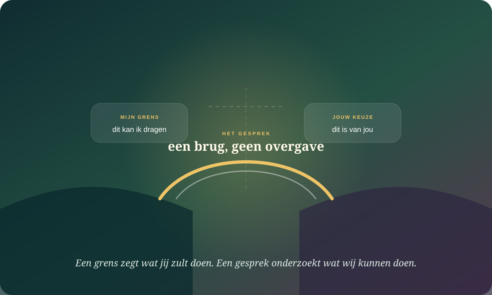

De kern in gewone taal
Een grens is geen muur rond jouw comfort. Het is duidelijkheid over wat jij kunt dragen, kiezen en doen.
Grenzen worden online vaak voorgesteld als regels die anderen moeten gehoorzamen. Wetenschappelijk is “boundary setting” geen enkelvoudig, strak afgebakend psychologisch construct. Bruikbaarder is onderscheiden: jouw limiet, een verzoek aan de ander, een gezamenlijke afspraak en een consequentie die jij zelf kunt uitvoeren. Moeilijke gesprekken zijn de plek waar die verschillen zichtbaar worden.
Ze beschrijft jouw deelname, niet de binnenwereld van de ander.
Je kunt betrokken zijn zonder ieder gevoel of gevolg te voorkomen.
Het kan vermijding zijn, maar ook overbelasting, onveiligheid of nog geen woorden hebben.
Veel grensconflicten beginnen doordat vier verschillende zinnen hetzelfde label krijgen.

Persoonlijke limiet
“Na negen uur neem ik geen werktelefoon meer op.”
Dit gaat over wat jij kunt of wilt doen. Je hoeft geen toestemming te krijgen om je eigen deelname te bepalen.
Verzoek
“Wil je mij vooraf bellen?”
Een verzoek laat een echt nee toe. Zonder die ruimte is het een eis, ook wanneer de toon zacht blijft.
Afspraak
“Wij spreken af om…”
Een afspraak ontstaat samen en kan opnieuw onderhandeld worden wanneer omstandigheden veranderen.
Consequentie
“Als dit gebeurt, stap ik uit het gesprek.”
Een uitvoerbare consequentie beschermt deelname. Dreigen probeert vooral het gedrag van de ander te controleren.
“Zeg gewoon nee” onderschat wat een nee sociaal kan kosten.
De juiste assertieve zin lost het probleem op.
Assertiviteitstraining maakte rechten, ik-boodschappen en directe verzoeken zichtbaar. Waardevol — maar soms blind voor macht, cultuur, afhankelijkheid en de reactie van de ander.
Stem, motief en context vormen samen de mogelijkheid.
Nieuwere studies bekijken waarom mensen spreken of zwijgen, hoe verwachtingen gesprekken vermijden en hoe ontvankelijk taalgebruik escalatie kan verminderen.
Een goede grenszin kan een slechte relatie niet veilig maken. Ze kan wel sneller tonen welke relatie je voor je hebt.
Soms vermijd je het gesprek. Soms kan je systeem het gesprek op dat moment niet dragen.
Een studie bij 1.471 volwassenen koppelde hoge conflictvermijding en lage conflictoplossing aan meer psychische belasting, maar het ontwerp toont geen eenvoudige oorzaak. Ander onderzoek naar stilte in romantische relaties benadrukt het motief: gekozen stilte kan rust, nabijheid of timing dienen; door druk ingegeven stilte hangt anders samen met welzijn en relatiekwaliteit.
Ik stel uit zodat de spanning verdwijnt.
Korte opluchting kan het onderwerp groter maken en verwachtingen van rampzalig conflict ongetest laten.
Mijn denkruimte valt weg.
Een pauze kan verstandig zijn wanneer spreken alleen nog verdedigen, aanvallen of bevriezen wordt.
De mogelijke prijs is reëel.
Bij dreiging, controle of geweld is zwijgen geen communicatiefout die met moed moet worden gecorrigeerd.
Niet nu is niet hetzelfde als nooit.
Een pauze wordt relationeel betrouwbaarder met een terugkeerpunt: “morgen om zeven uur praten we verder.”
Mensen vermijden verschil omdat ze onderschatten hoeveel menselijkheid in een echt gesprek kan ontstaan.
Drie experimenten uit 2024 vonden dat mensen gesprekken met andersdenkenden negatiever voorspelden dan ze uiteindelijk ervoeren. Onderzoek naar conversationele ontvankelijkheid laat bovendien zien dat taal die erkenning, bescheidenheid en betrokkenheid communiceert escalatie kan beperken. Dat betekent niet dat ieder conflict goed afloopt of dat je met iedereen moet praten.
Erken een begrijpelijk punt
“Ik snap dat voorspelbaarheid voor jou belangrijk is.” Erkenning is geen volledige instemming.
Markeer jouw perspectief als perspectief
“Zoals ik het nu zie…” vermindert stelligheid zonder je standpunt te verbergen.
Noem het verschil concreet
Vermijd “altijd” en “nooit”. Benoem gedrag, moment en effect.
Vraag naar de werkbare ruimte
“Wat kan wél?” maakt geen compromis verplicht, maar brengt mogelijkheden in beeld.
Niet elk gesprek is een debat: receptieve taal is geen techniek om iemand sneller te overtuigen. Zodra luisteren alleen een strategie voor compliance wordt, verdwijnt wederkerigheid.
Je bent verantwoordelijk voor jouw aandeel — niet voor de volledige emotionele uitkomst.
Mijn woorden, timing en handelen
Ik kan duidelijkheid, herstel, excuses en uitvoerbare consequenties bieden.
Jouw keuze en interpretatie
Ik kan invloed hebben op jouw gevoel zonder eigenaar van ieder gevoel te zijn.
Afspraken en patronen
Wederkerigheid vraagt dat beide personen informatie ontvangen en gedrag kunnen bijstellen.
Macht, tijd, zorglast en middelen
Niet alles is met betere communicatie oplosbaar. Soms moet de feitelijke belasting veranderen.
Wanneer openheid als munitie wordt gebruikt, is afstand soms informatiever dan uitleg.
Bij intimidatie, stalking, dreiging, financieel misbruik of geweld is een zorgvuldig geformuleerde ik-boodschap geen veiligheidsplan. Zoek steun buiten de relatie en maak keuzes die risico verminderen. Ook zonder acuut gevaar mag je een gesprek beëindigen wanneer iemand blijft vernederen, verdraaien of jouw nee als onderhandelingsstart behandelt.
“Ik stop dit gesprek nu” is volledig, ook wanneer de ander jouw reden onvoldoende vindt. Begrip van de ander kan herstel mogelijk maken; het is geen toegangsvoorwaarde tot jouw limiet.
Wie onderzoekt wat er vóór, tijdens en na verschil gebeurt?
Julia A. Minson
Welke taal laat openheid horen?
Ontwikkelt onderzoek naar conversationele ontvankelijkheid en constructief verschil.
Nicholas Epley
Waarom voorspellen we gesprekken vaak te somber?
Onderzoekt misverstanden over sociale interactie, verbinding en meningsverschil.
Netta Weinstein
Waarom zwijgt iemand: uit keuze of uit druk?
Brengt zelfdeterminatietheorie naar stilte, autonomie en relationele kwaliteit.
Guy Bodenmann
Hoe dragen koppels stress zonder elkaar te verliezen?
Onderzoekt dyadische coping, wederzijdse steun en terugkerende conflictpatronen.
Maak je zin kleiner, concreter en uitvoerbaar.
Waarneming
“Wanneer een gesprek doorgaat nadat ik om een pauze vraag…” Beschrijf wat een camera zou kunnen registreren.
Effect en limiet
“…raak ik overspoeld en kan ik niet meer zorgvuldig antwoorden.” Geen diagnose van de ander nodig.
Verzoek
“Wil je een pauze van twintig minuten respecteren?” Laat de vraag concreet zijn.
Eigen actie
“Als dat niet lukt, ga ik naar buiten en kom ik om acht uur terug.” Kies iets wat jij werkelijk kunt doen.
Bouw één zin die niet uitlegt wie de ander is.
Van stilvallen naar een grens met terugkeerpunt
Gebruik dit alleen wanneer spreken voldoende veilig is. Een pauze mag ook de uitkomst zijn.
Er wordt niets verstuurd. Je antwoorden blijven alleen in deze browser bewaard.
Waarop dit dossier steunt.
- Drie experimenten · 2024Wald, Kardas & Epley — Misplaced Divides?
Mensen onderschatten hoe positief gesprekken met andersdenkenden kunnen verlopen.
- Experimenteel programma · 2020Yeomans e.a. — Conversational receptiveness
Taal die betrokkenheid bij tegengestelde visies communiceert en escalatie kan beperken.
- Volwassen steekproef · 2024Bruce e.a. — Conflict, avoidance and resolution
Conflictvermijding, conflictoplossing en psychische belasting bij 1.471 volwassenen.
- Vier studies · 2024Weinstein e.a. — Intimate sounds of silence
Onderscheidt autonome en gecontroleerde motieven voor stilte in relaties.
- Koppelstudie · 2023Bretaña e.a. — Avoidance, conflict resolution and satisfaction
Terugtrekking, vermijdende hechting en relatiekwaliteit in verschillende contexten.
- Koppelstudie · 2023Dugal e.a. — Conflict topics and emotional reactions
Actor-partneranalyse van hechtingsonzekerheid, conflictthema’s en tevredenheid.
- Experimenteel · 2022Dorison e.a. — Underestimating counterparts’ learning goals
Verwachtingen over de openheid van de ander beïnvloeden bereidheid tot gesprek.